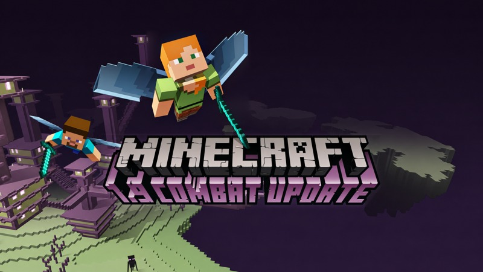

01Wilderness Bound
Primary source retained. No reconstructed variant was requested for this update.
{kind=link}
02Chaos Cubed
{kind=link}

Preferred variant · AI reconstruction
R03 · Expanded composition - ratings badge removed
2,560 × 1,440PNG
The covered wall was reconstructed with a localized AI patch. All pixels outside the repair bounds are identical to P03; both source compositions are preserved separately.
03Tiny Takeover
{kind=link}

Preferred variant · AI reconstruction
R05 · Complete scene - no title
2,275 × 1,440PNG
P05 clean scene extended with P04 side coverage and synthesized missing corners. Source transitions are blended gradually; a boundary streak was removed using clean petal pixels. Original source files remain separate. The remaining upper sampling-boundary streak was removed using clean existing sky/scene pixels.

Preferred variant · AI reconstruction
R04 · Complete scene - original title treatment
2,275 × 1,440PNG
Complete scene with original P04 lettering and synthesized corners. Source transitions are blended gradually; a boundary streak was removed using clean petal pixels. Added sides retain the smaller source detail limit. The remaining upper sampling-boundary streak was removed using clean existing sky/scene pixels.
04Mounts of Mayhem
Primary source retained. No reconstructed variant was requested for this update.

Primary source · Official artwork
P07 · Key art — full composition
2,048 × 1,440PNG
05The Copper Age
Primary source retained. No reconstructed variant was requested for this update.

Primary source · Official artwork
P09 · Key art — full composition
2,048 × 1,440PNG
06Chase the Skies
Primary source retained. No reconstructed variant was requested for this update.

Primary source · Official artwork
P10 · Key art — full composition
2,048 × 1,440JPEG
07Spring to Life

Primary source · Official artwork
P12 · Key art — square variant
2,048 × 2,048PNG

Preferred variant · AI reconstruction
R12 · Complete scene with reconstructed corners
3,430 × 2,048PNG
P12 centre with P11 sides and synthesized missing corners. The joins now use gradual source blending; peripheral JPEG detail is still limited. Sampling-boundary streaks on both upper birch transitions were removed using clean existing source-composite pixels.
08The Garden Awakens
Primary source retained. No reconstructed variant was requested for this update.

Primary source · Official artwork
P13 · Key art — landscape
2,560 × 1,440PNG
09Bundles of Bravery
Primary source retained. No reconstructed variant was requested for this update.
Primary source · Official artwork
P14 · Key art — with Minecraft logo
2,560 × 1,440PNG
{kind=link}
10Tricky Trials

Primary source · Official artwork
P17 · Key art — full composition without title
2,058 × 1,440PNG

Preferred variant · AI reconstruction
R17 · Expanded clean scene
2,198 × 1,440PNG
P17 centre with registered P16 side coverage and small synthesized missing corners. Original source masonry and textures are retained, with restrained luminance sharpening in the softer outer source strips, feathered into the native centre.

Preferred variant · AI reconstruction
R16 · Titled scene with alternate Breeze placement
2,196 × 1,235PNG
P16 widescreen framing, original lettering and alternate Breeze placement over P17. Registered source pixels restore side-strip masonry and Breeze geometry. Restrained luminance sharpening improves the softer strips and Breeze region; small corner fills and narrow transition pixels remain reconstructed.
11Armored Paws
Primary source retained. No reconstructed variant was requested for this update.

Primary source · Official artwork
P19 · Badlands trailer artwork
1,170 × 500JPEG
12Bats and Pots
Primary source retained. No reconstructed variant was requested for this update.

Primary source · Official artwork
P20 · Bats and Pots release banner
1,170 × 500JPEG
13Trails & Tales

Primary source · Official artwork
P22 · Key art — full composition with title
2,058 × 1,440PNG

Preferred variant · Source composite
R21 · Titled scene with alternate Sniffer placement
2,058 × 1,158PNG
Direct source-pixel reconstruction; no AI generation. P22 scene with original P21 title and alternate Sniffer placement.
14The Wild Update
Primary source · Official artwork
P24 · Key art — landscape without logo
2,560 × 1,440PNG
{kind=link}

Preferred variant · Source composite
R25 · Titled landscape from clean source
2,560 × 1,440PNG
Aligned P24 scene with original P25 lettering and target-only frame content. Horizontal source transitions are now blended over 150 pixels to reduce visible resolution bands.

Preferred variant · Source composite
R26 · Square composition with higher-detail source centre
2,560 × 2,560PNG
P24 detail in the shared centre, with P26 square-only sky, red parrot and cavern retained. Horizontal transitions are now blended over 150 pixels; unique frame regions retain their source detail limit.
15Caves & Cliffs Part II

Primary source · Official artwork
P29 · Key art — without title
2,560 × 1,440PNG

Preferred variant · Source composite
R28 · Clean scene with official Part II title
2,560 × 1,440PNG
P29 scene with the larger official P32 Minecraft / Caves & Cliffs logo and original P28 PART II lettering. Direct source compositing; no AI generation.
16Caves & Cliffs Part I

Primary source · Official artwork
P31 · Key art — without title
2,560 × 1,440PNG

Preferred variant · Source composite
R30 · Clean scene with official Part I title
2,560 × 1,440PNG
P31 scene with the larger official P32 Minecraft / Caves & Cliffs logo and original P30 PART I lettering. Direct source compositing; no AI generation.
17Nether Update

Primary source · Official artwork
P34 · Key art — without title
2,560 × 1,440PNG

Preferred variant · AI restoration and custom title placement
R34 · Custom titled scene
2,560 × 1,440PNG
Custom, unofficial placement of the P35 title on P34. Local AI restoration improves the small logo crop; fine lettering texture is inferred. Scene outside that crop is retained.
18Buzzy Bees

Primary source · Official artwork
P36 · Key art — smaller Alex
2,560 × 1,440PNG

Preferred variant · AI reconstruction
R37 · Larger Alex variant on clean scene
2,560 × 1,440PNG
P36 source retained outside a local AI-enhanced Alex patch matching P37 larger placement.
19Village & Pillage
Primary source · Official artwork
P38 · Key art — without logo
2,560 × 1,440PNG
{kind=link}

Preferred variant · Source composite
R38 · Clean scene with reference title placement
2,560 × 1,440PNG
P38 scene with original P39 lettering at matching normalized coordinates. Derived composition; scene layout remains P38.
20Update Aquatic
Primary source · Official artwork
P41 · Key art — landscape without logo
2,560 × 1,440PNG
{kind=link}

Preferred variant · Source composite with localized AI repair
R40A · Expanded banner without title
4,320 × 1,440PNG
P41 native centre with registered P40 expanded sides, adjusted source joins and a small inherited AI water fill that removes clipped lettering. Enlarged side regions have restrained luminance sharpening and gently feathered smoothing at the source sharpness transitions. Original bubble positions and coral shapes are retained; source-specific bubble styles, mixed resolution and softer outer reefs remain.

Preferred variant · Source composite with custom title
R40B · Expanded banner with custom title placement
4,320 × 1,440PNG
Same source-composite scene and detail adjustments as R40A, with the existing custom title overlay preserved. Title placement is unofficial; fine title detail and the small inherited AI water fill are inferred. Original bubble positions and coral shapes are retained, with mixed source resolution and source-specific bubble styles still visible.

Preferred variant · AI restoration and custom title placement
R41 · Clean scene with custom title placement
2,560 × 1,440PNG
P41 scene with a locally AI-restored title based on P40. Placement is custom and unofficial; fine lettering detail is inferred, with the scene retained outside the title crop.
21World of Color Update
Primary source retained. No reconstructed variant was requested for this update.
Primary source · Official artwork
P42 · Key art — without logo
2,560 × 1,440PNG
{kind=link}
22Exploration Update

Primary source · Official artwork
P45 · Key art — full original
8,001 × 3,391JPEG

Preferred variant · AI reconstruction
R52 · Trailer title composition reconstructed from the full original
6,000 × 3,375PNG
6000 x 3375 reconstruction of the trailer framing using P45 scene and relocated Vex pixels. AI reconstructs the S52 title and exposed wall. Title matte pinholes and the C aperture were repaired using the registered scene beneath. This is a derivative, not an original high-resolution titled release.
23Frostburn Update
Primary source retained. No reconstructed variant was requested for this update.

Primary source · Official artwork
P47 · Original release screenshot
1,280 × 720PNG
24Combat Update

Primary source · Official artwork
P49 · Original official artwork
1,280 × 720PNG
{kind=link}

Preferred variant · Source resampling
R49 · Combat Update - source-faithful 5K resampling
5,120 × 2,880PNG
5120 x 2880 derivative rebuilt from the original 1280 x 720 P49 using bounded sharpening and Lanczos resampling only. Original block, terrain, wing, face and lettering shapes are retained; no generated scene detail remains. Stored 5K dimensions do not establish native 5K detail.
25Bountiful Update
Standalone title reference; no collected key-art scene.
Title reference · Fan art
P50 · Fan-made title logo
1,920 × 1,080PNG
Created by u/OmerBs. Original upload: https://i.redd.it/unik7dvpdgw61.png
{kind=link}
26Redstone Update
Standalone title reference; no collected key-art scene.
Title reference · Fan art
P51 · Fan-made title logo
1,024 × 319JPEG
Attribution to u/OmerBs is unverified. The secondary source is unavailable; no primary or larger source has been recovered.
{kind=link}
No artwork matches. Try another update or clear the filters.